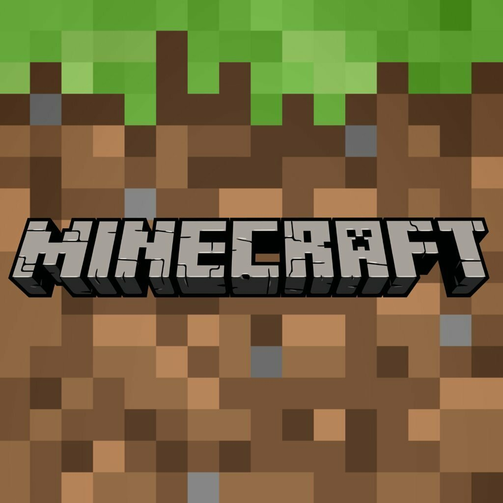

Minecraft — это строительная игра жанра «песочница», вдохновлённая Infiniminer, Dwarf Fortress и Dungeon Keeper и созданная Маркусом Перссоном, основателем Mojang AB. Игра позволяет игрокам создавать и разрушать различные блоки и использовать предметы в трёхмерном окружении. Игрок может создавать фантастические строения и художественные работы в одиночку или с другими игроками на сервере в различных игровых режимах.
С помощью блоков игроки могут влиять на мир, строить и уничтожать структуры. Поскольку игровой процесс в Minecraft открыт и не имеет конечной цели, игроки часто устанавливают свои собственные цели и играют в игру так, как они считают целесообразным. Есть различные виды блоков, которые выполняют разные функции и имеют разные свойства (Пример: песок падает под действием силы тяжести, если под ним нет блока). Используя блоки, можно строить замки, дороги, здания и мосты, а также рисовать пиксель арт. Гигантскую шахматную доску или картину тяжело не заметить на сервере. Также из блоков можно строить стадионы для сплифа. Учитывая все функции блоков, можно строить разные мини-игры и т.п.
На данный момент в игре присутствуют пять режимов: Выживание, Творчество, Приключение, Хардкор и Наблюдение. На сервере и в мирах одиночной игры с включенной опцией «Чит-коды» можно переключать режимы командой /gamemode, а сочетание клавиш F3+N переключает между режимами Творчество и Наблюдение. С Java Edition 1.16, при удерживании клавиши F3 открывается экран отладки с меню выбора игрового режима. Переключение осуществляется с помощью ЛКМ или клавишей F4.
В этом режиме игроки должны добывать материалы для строительства, крафта и получать очки опыта. Есть шкалы здоровья, голода, брони, а под водой — воздуха. Также есть инвентарь.
В этом режиме игроки могут летать, имеют доступ к бесконечному количеству предметов и блоков, которые можно уничтожить мгновенно. Игроки неуязвимы и почти бессмертны (они могут умереть только от Пустоты и команды /kill), у них отсутствуют шкалы здоровья, голода, воздуха (если под водой) и брони. Также в этом режиме можно получить яйца призывания, недоступные в режиме выживания.
В этом режиме игроки могут взаимодействовать с такими объектами, как переключатели и механизмы, а также с мобами. Однако игроки не могут устанавливать и уничтожать блоки без правильных инструментов (с предварительной сборки 14w02a игроки никак не могут разрушать или устанавливать блоки). Недоступен как игровой режим при создании мира, но может быть включён командой /gamemode 2.
В этот режим можно играть так же, как в «Выживание», но сложность всегда установлена на «Сложно» и после смерти игрока мир может быть либо удалён, либо просмотрен в режиме Наблюдение. Технически является не отдельным режимом, а опцией. Можно сделать Hardcore Creative или Hardcore Adventure. При использовании хардкора на сервере после смерти игроки будут автоматически заблокированы. После того как будут заблокированы все игроки на сервере, мир будет удалён. Если разбанить умершего игрока через /pardon, то при попытке его входа он будет забанен заново.
В этом режиме игроки могут летать сквозь блоки и смотреть от лица любой сущности, кроме Дракона Края. Однако игроки не могут устанавливать и уничтожать блоки. Недоступен как игровой режим при создании мира, но может быть включён командой /gamemode 3, /gamemode sp или /gamemode spectator, а также после смерти в Хардкорном режиме. В этом режиме, как и в творческом, можно умереть, залетев под коренную породу. Режим полёта нельзя отключить. При полёте через твёрдые блоки видны ближайшие полости в слое блоков.
Вверх О крафте О переплавке О зельеварении